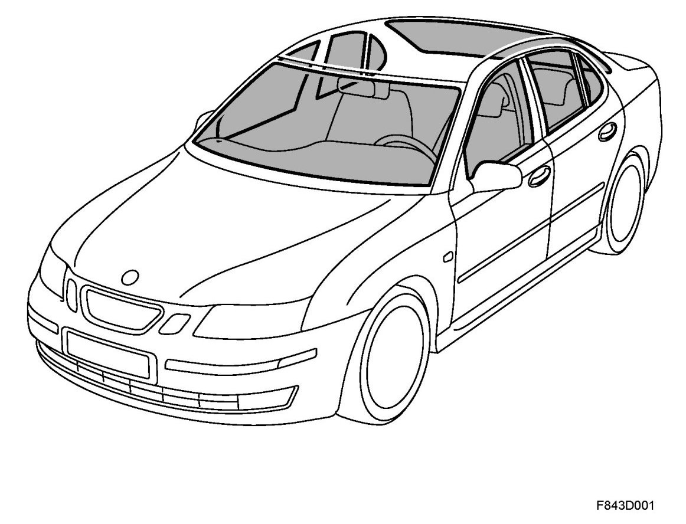
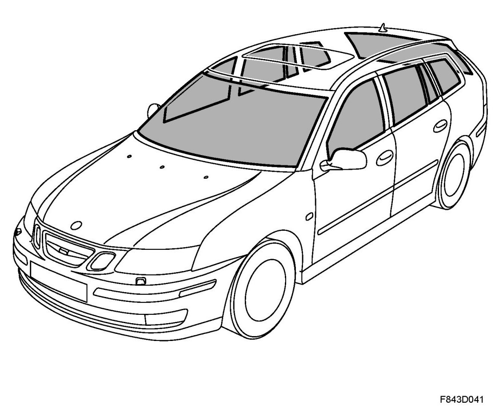

Windscreen, Rear Window And Side Window, 4D, 5D
Windscreen, Rear Window And Side Window, 4D, 5D

Windscreen and rear window, 4D
The windscreen and rear window are bonded to the body and are part of the cars load-bearing structure. The windscreen and rear window significantly contribute to the torsional stiffness of the body. Their design and mounting have been carefully tested to meet with the legal provisions regarding impact safety.
The heat-absorbant glass contains iron oxide that takes in and stores the heat. During travel, the wind cools the glass and takes with it the stored heat. The heat-absorbant glass leads to reduction of fan speed.
The airbags in the airbag system bear on the windscreen when they are inflated. Therefore, it is extremely important that the windscreen is mounted correctly, both for the function of the car and for the safety of the occupants.
The only glass adhesive that has been crash tested and approved for the after-sales market is Betaseal X 2500. If Saab Automobile AB is to take responsibility for guaranteeing a continued high degree of safety after window replacement, windows must be bonded with Betaseal X 2500.
There are a number of heating wires inside the rear window glass. These heating wires are used as an antenna for the audio system in combination with an antenna amplifier.
Windscreen and rear window, 5D

The windscreen and rear window are bonded to the body and are part of the cars load-bearing structure. The windscreen and rear window significantly contribute to the torsional stiffness of the body. Their design and mounting have been carefully tested to meet with the legal provisions regarding impact safety.
The heat-absorbant glass contains iron oxide that takes in and stores the heat. During travel, the wind cools the glass and takes with it the stored heat. The heat-absorbant glass leads to reduction of fan speed.
The rear window together with the rear side windows are available in two variants, normal or dark tinted. Dark tinted windows allow less heat into the cabin and are available as an option.
The airbags in the airbag system bear on the windscreen when they are inflated. Therefore, it is extremely important that the windscreen is mounted correctly, both for the function of the car and for the safety of the occupants.
The only glass adhesive that has been crash tested and approved for the after-sales market is Betaseal X 2500. If Saab Automobile AB is to take responsibility for guaranteeing a continued high degree of safety after window replacement, windows must be glued with Betaseal X 2500.
There are a number of heating wires inside the rear window glass.
The rear window and rear side windows have glass breakage loop. If a window is broken, the loop will be broken and the alarm will go off.
Side windows
The side windows are mounted in rubber-covered brackets on the window lifts.
All the doors have electric windows. These can be operated independently from each door or centrally from the driver's door.
The heat-absorbant glass contains iron oxide that takes in and stores the heat. During travel, the wind cools the glass and takes with it the stored heat. The heat-absorbant glass leads to reduction of fan speed.
The rear doors have a fixed window pane that is bolted to the door frame.